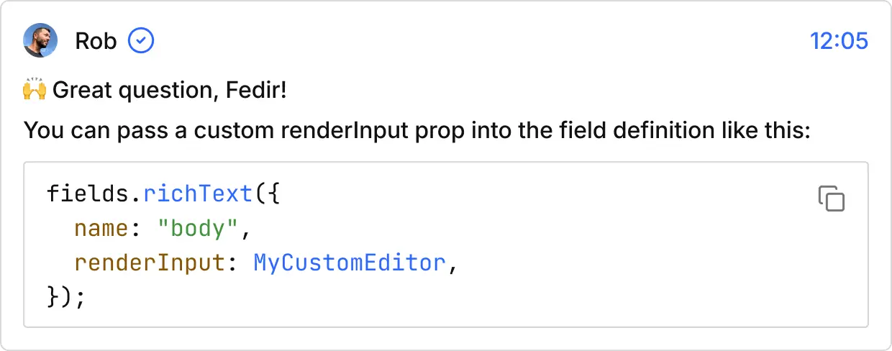

Talk to the Scalar team
Whether you're a solo dev, content team, or curious contributor—our community is your community.
Discord
Ask questions, share ideas, or just hang out.
GitHub
We're always open to PRs and feature requests.
Twitter/X
Keep up with releases and behind-the-scenes moments.
Email us directly
For enterprise pricing, partnerships, or anything else:
